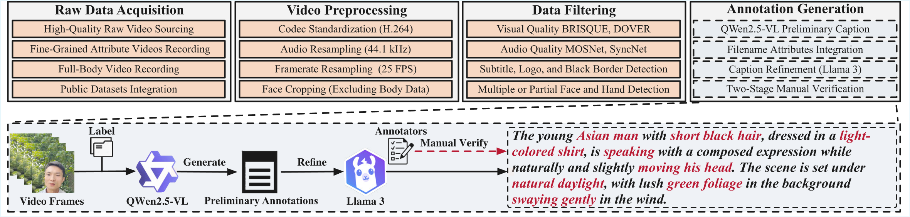

DH-OmniFace: A Comprehensive Dataset Suite for Controllable Human-Centric Video Generation
Arxiv 2025
📜 Overview & Abstract

Overview of the DH-OmniFace. The suite includes seven components: DH-FaceVid-1K for talking face generation, DH-FaceEmoVid for expressive emotions, DH-FaceReliVid for diverse lighting conditions, DH-FaceLolVid for authentic laughter, DH-FaceDrasMvVid for large-angle head movements, DH-MVHeadVid for multi-view head poses, and DH-SingleVid for complex body movements. The lower panels summarize our experiments: (i) fine-tuning generative backbones, (ii) introducing the FACET benchmark, and (iii) exploring joint training of face and full-body data in full-body video generation.
Human-centric video generation has made significant progress in synthesizing realistic, temporally coherent videos. However, advancing controllable generation of fine-grained facial attributes, e.g., emotion, head pose, and lighting conditions, is hindered by the lack of large-scale, high-quality datasets with rich annotations.
To address this gap, we present DH-OmniFace, a comprehensive suite of human-centric video datasets covering diverse facial attributes and full-body actions.
The suite comprises 340,407 video clips totaling 1,879 hours from over 20,000 individuals, including 128,392 clips at 1080×1080 and 23,887 clips at 1080p.
To ensure quality, we establish a multi-stage pipeline to filter out noisy samples, such as hands appearing at frame edges and truncated logos, which could otherwise degrade generation quality.
Each sample is paired with synchronized speech audio and text annotations to support multimodal learning.
The dataset offers extensive attribute coverage, including six core emotions (e.g., happy, angry, disgusted), 16 lighting conditions (artificial and natural light at different times of day), 360° head poses (captured by a 12-camera array covering frontal, profile, and back views), and dynamic actions (including laughter and complex body movements such as calisthenics and yoga).
🔥 Download Instructions & Policy
To download the DH-OmniFace dataset suite, please submit the request form using an official institutional email and clearly stating your research purpose. Requests from personal emails will be rejected.
After approval (usually within 2–3 working days), download instructions will be sent via email. If you encounter any issues, contact fenghe021209@gmail.com.
These samples are sourced from crowd-sourcing platforms. By downloading, you agree to comply with the license agreement.
🚀 Open-source Plan
Our open-source roadmap is ongoing. We will update the status here as we make progress.
Phase 1 Ongoing
Open the DH-OmniFace dataset suite in a controlled manner for public access.
DH-FaceVid-1K
DH-FaceEmoVid
The emotions include happy, angry, fearful, disgusted, sad, and surprised.
DH-FaceReliVid
DH-FaceLolVid
DH-FaceDrasMvVid
DH-MVHeadVid
DH-SingleVid
📊 Datasets Comparison
Compared with other datasets, DH-OmniFace has a larger data volume, superior visual quality, and broader attribute coverage.

📈 Statistics
Details of each subset.

⚙️ Collection Pipeline
Overview of the data curation pipeline, comprising four main stages: raw data acquisition, video preprocessing, noisy data filtering, and annotation generation using Qwen2.5-VL and Llama 3, followed by two-stage manual verification.